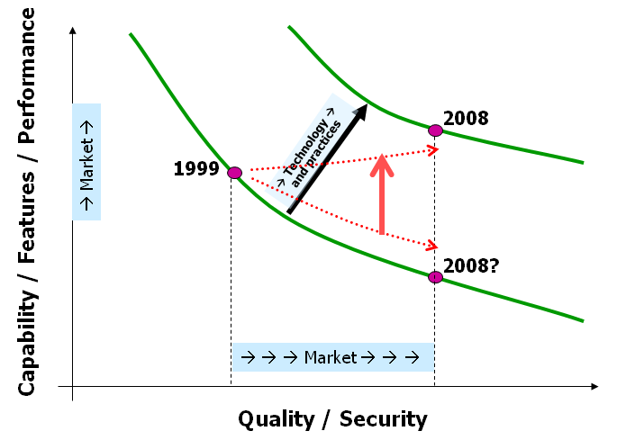
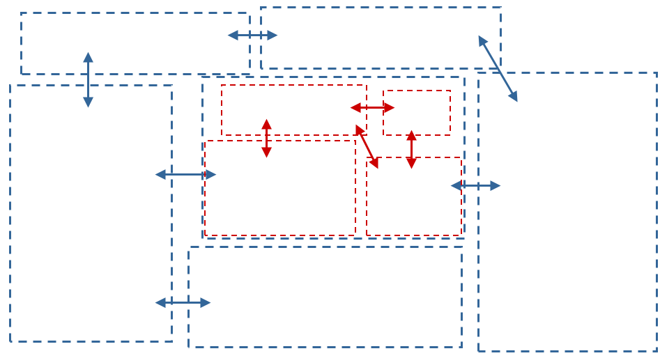
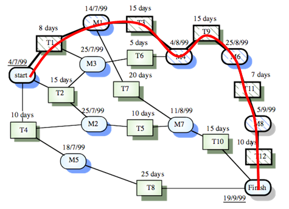
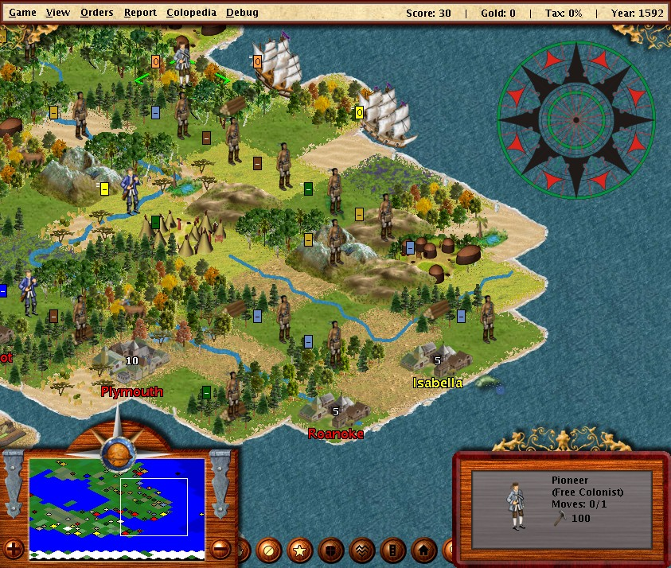

Questions
- When is a program good enough to ship? Have you built what the customer wanted?
- Why (and how) does Netflix deliberately and randomly take down its own servers?
- What can we learn from the Boeing 737 disaster?
- How did Twitter eradicate the Fail Whale? And what does it have to do with Ruby?
- How do you get a patch accepted into an open-source project?
- You can write code. Can you build software?
Overview
Successful software projects require more than just technical expertise. Figuring out what the client wants, collaborating in a team, managing complexity, mitigating risks, staying on time and budget, and determining under various constraints when a product is good enough to be shipped are at least equally important topics that often have a significant human component. 17-313 explores these issues broadly covering the fundamentals of modern software engineering.
 Assuming reasonably solid programming skills (including unit testing and code-level design), we will explore the following topics:
{kind=link}
- Process consideration for software development
(How do avoid problems early? When and how much to design? When and how much to test? When and how to involve the customers? Agile methods...) - Requirements elicitation, documentation, and evaluation
(How to figure out what the customer really wants? Who else has an interest? How can we measure success objectively? How can we reliably document expectations? ...) - Design for quality attributes 
(How can we design a system to be able to scale to millions of users? How can we design security into a system? ...) - Strategies for quality assurance, including measurement, inspection, and static and dynamic analysis
(What quality assurance strategy is best for a given system? What can we automate and when should we keep humans in the loop? How much testing and what kind of testing should we do? What qualities are important to assure beyond functional correctness? Can we evaluate usability, scalability, reliability, performance? How can we statically guarantee the absence of certain security issues? ...) - Empirical methods in software engineering

(How can we measure quality attributes such as performance, security, and reliability? How can we measure how users interact with the system? How can we know whether the difference matters? ...) - Time and team management

(How to estimate the duration and costs of a project? How to monitor progress and risks to recognize issues early? How to coordinate developers in a team? How to form and develop teams? How to select and motivate team members? How to deal with team dynamics such as social loafing? ...) - Economics of software development
(business models, outsourcing, open source, ...)
{kind=link}
{kind=link}
This course has a strong technical focus, and includes assignments with and without programming. Assignments also include written components. Students will get experience with team management and modern software-engineering tools. The course puts students on a fast track toward project management positions.
Assignments (mostly done in groups) include:
-

- An introduction assignment where individual students will learn to engage with an existing code base.
- A requirements assignment in which each team will interview stakeholders to elicit and document requirements for a software system.
- An architecture assignment in which teams will train and deploy an ML model using microservices. A project in which each team contributes to an open source project of their choice. This involves identifying an issue in the existing project, understanding the development process of that project and how to contribute, and actually making a contribution such as fixing a bug or adding a feature. Extra credit will be awarded if the contribution is merged into the project.
Logistics and People
Fall 2020, this course is designated as a hybrid offerring.
- All lectures will take place over zoom.
- Two recitations are assigned classrooms, when undergraduate in-person instruction is permitted; two are remote-only. Note that only individuals registered for a given in-person recitation may attend that in-person recitation. This is due to strict classroom capacity requirements.
- If you are assigned to Sections A or B, but know for sure you do not want to attend in person, please contact us to discuss the best way we can accommodate you.
Lectures:
- Tue/Thu 3:20-4:40 p.m. ET on Zoom
- Wed 1:20-2:10 p.m. ET in WEH 5403 (Section A)
- Wed 2:40-3:30 p.m. ET in WEH 5409 (Section B)
- Fri 1:20-2:10 p.m. ET on Zoom (Section C)
- Fri 2:40-3:30 p.m. ET on Zoom (Section D)
Office hours: Fri 9:15 - 10:15 am, 12:30 - 1:30 pm
Email: clegoues@cs.cmu.edu
Office hours: Tue 7:00 - 8:00 PM, Wed 10:00 - 11:00 AM
Email: cmeiklej@cs.cmu.edu
Please feel free reach out to the instructors on Slack outside of office hours if you have any questions; we'll try to answer you as quickly as possible, and are happy to set up ad hoc zoom meetings whenever possible.
Schedule
The following schedule describes the current planing status and the covered concepts. It is subject to change and will be updated as the semester progresses, especially to help focus on requested topics or support learning. The readings are almost always associated with a reading quiz; please check Canvas!
| Date | Topic | Reading assignments* | Assignments due* | |
|---|---|---|---|---|
| 1-Sep | Introduction | |||
| 2/4-Sep | Tools for collaborative software development | rec1 Recitation 1 | ||
| 3-Sep | Metrics and Measurement | Scheduling/background surveys | ||
| 8-Sep | Case Study: 737-MAX | Seattle Times Article on the Boeing 737 Max | ||
| 9/11-Sep | Docker and Docker Compose | rec2 Recitation 2 | ||
| 10-Sep | Milestones, Estimation, and Planning | Homework 2 PDF | ||
| 15-Sep | Software archaeology | hw1 Homework 1 | ||
| 16/18-Sep | Software Archaeology | rec3 Recitation 3 | ||
| 17-Sep | Requirements: Concepts and Challenges | Course notes on requirements | ||
| 22-Sep | Requirements: Elicitation and Documentation | Interview question prep | hw2 Homework 2 (Initial Plan) | |
| 23/25-Sep | Requirements Interviews | rec4 Recitation 4 | ||
| 24-Sep | Ethics | Ethics in technology prompt | ||
| 29-Sep | Software Engineering for Machine Learning | hw2 Homework 2 (Code Artifacts) | ||
| 30-Sep/2-Oct | Software Requirements | rec5 Recitation 5 | ||
| 1-Oct | Software Engineering for Machine Learning, Part 2 Demo Notebook |
hw2 Homework 2 (Reflection) | ||
| 6-Oct | Software Architecture -- Intro and Overview | Twitter Case Study | ||
| 7/9-Oct | Machine Learning | rec6 Recitation 6 Setup rec6 Recitation 6 |
||
| 8-Oct | Architecture: Documentation, Patterns, Tactics | Architecture Travelogue | ||
| 13-Oct | Architecture: Design Docs | System Design | ||
| 14/16-Oct | Midterm Review | |||
| 15-Oct | Microservices | hw3 Homework 3 | ||
| 20-Oct | DevOps | |||
| 21/23-Oct | Midterm Review | |||
| 22-Oct | Midterm | |||
| 27-Oct | QA & Testing | Netflix blog posts on AWS, Chaos Monkey, Simian Army | hw4 Homework 4a | |
| 28/30-Oct | Kubernetes | rec7 Recitation 7 | ||
| 29-Oct | Chaos Engineering | |||
| 3-Nov | Static Analysis (1/2) | Notes on static analysis | hw4 Homework 4b NOTE: DUE NOV 4 |
|
| 4/6-Nov | Continuous Integration and Static Analysis | rec8 Recitation 8 | ||
| 5-Nov | Static Analysis (2/2) | Interview question for Gremlin | hw4 Homework 4c NOTE: DUE NOV 6 |
|
| 10-Nov | ML Explainability and Testing | hw4 Homework 4d | ||
| 11/13-Nov | Chaos Engineering | rec9 Recitation 9 | ||
| 12-Nov | ML Explainability and Testing, Part 2 | |||
| 17-Nov | QA Process | Sadowski et al., Static Analysis at Google | ||
| 18/20-Nov | No recitation | |||
| 19-Nov | QA Process, Inspections/Code Review | |||
| 24-Nov | Thanksgiving Week | hw5 Homework 5 | ||
| 25/27-Nov | Thanksgiving Week | |||
| 26-Nov | Thanksgiving Week | |||
| 1-Dec | Process: From Iterative to Agile | UC report excerpts, UC article | ||
| 2/4-Dec | Agile Process | rec10 Recitation 10 | ||
| 3-Dec | Peopleware | |||
| 8-Dec | Interviewing | hw6 Homework 6(a) | ||
| 9/11-Dec | Team Dysfunction | rec11 Recitation 11 | ||
| 10-Dec | TBD | |||
| 17-Dec | NO CLASS FINALS WEEK | hw6 Homework 6 (rest) | ||
| Dec 18, 1-4 pm | Final Project Presentations |
* = For details, see assignment in Canvas.
Course Syllabus and Policies
The course will use zoom for lectures, remote recitation, and office hours; links are available through Canvas. The course uses Canvas (and Gradescope) for homework submission, grading, discussion, questions, announcements, lecture recordings, and supplementary documents; slides will be posted here; GitHub is used to coordinate group work. We will also use Slack for communication and group work. See Canvas for the sign up link.
Waitlist: We believe the waitlist is cleared; if you disagree or are having trouble enrolling, please contact us.
Prerequisites: No formal prerequisites, but you will get more out of the course if you have experience with some larger development projects, for example, through larger class projects (e.g., 17-214, 15-410), internships, or open-source contributions.
Communication: We make announcements through Canvas, including clarifying homework assignments. We will also be using Slack both for communication with the instructors, and to support your group work communication. The instructors and TAs hold weekly office hours and are reachable by email and Slack. Reach out for additional appointments.
Teamwork: Teamwork is an essential part of this course. Most assignments are done in teams of 3-5 students. Teams will be assigned by the instructor and stay together for multiple assignments. We will consider your time zones and availability when assigning teams. Guidance on teamwork, reflection, and conflict resolution will be provided throughout the semester and are an essential component of the class. Most assignments have a component that is graded for the entire group and a component that is graded individually. The team policy posted on Canvas applies and describes roles and teams and how to deal with conflicts and imbalances.
Textbook: Various readings throughout the semester available online or through the library; we do not have a single text book but rather assemble readings from different sources. As optional supplementary reading consider Ian Sommerville, Software Engineering, 7th or 8th edition. Note that we do not expect that the bookstore will carry the old edition; instead, many copies are available online, such as through Amazon.com (and many other booksellers and textbook reseller) for significantly less than 20USD.
Assessment: Evaluation will be based on the following distribution: 60% assignments, 20% midterm, 10% in-class exercises (which may be completed asynchronously), 10% reading quizzes. The midterm will be open-everything and take-home, designed to be completed in a standard 80-minute class period, but assigned over a 24-hour period to accommodate various remote time zones.
Time management: This is a 12-unit course, and it is our intention to manage it so that you spend close to 12 hours a week on the course, on average. In general, 4 hours/week will be spent in class and 8 hours on reading and assignments. Notice that most homework is done in groups, so please account for the overhead and decreased time flexibility that comes with groupwork. Please feel free to give the course staff feedback on how much time the course is taking for you.
Late work policy: Late work will receive feedback but no credit. Due to heavy reliance on teamwork in this course there are no late days. Exceptions to this policy will be made only in extraordinary circumstances, almost always involving a family or medical emergency---with your academic advisor or the Dean of Student Affairs requesting the exception on your behalf. Accommodations for travel (e.g., for interviews) are possible if requested at least 3 days in advance. Please communicate also with your team about timing issues.
Writing: Describing tradeoffs among decisions and communication with less technical stakeholders are key aspects of this class. Most homework assignments have a component that require discussing issues in written form or reflecting about experiences. To practice writing skills, the Global Communications Center (GCC) offers one-on-one help for students, along with workshops. The instructors are also happy to provide additional guidance if requested.
Professionalism: Your classmates are your colleagues. This is particularly true in this course, where we aim to provide you with principles, practices, tools, and paradigms that will enable you to be an effective, real-world Software Engineer. We ask that you treat one another like the professionals you are and that you are preparing to be.
To that end, we will not tolerate harassement in this class. We define harassment as unwelcome or hostile behavior of an ad hominem nature, i.e., that focuses not on ideas but on people and identity. This includes offensive verbal or written comments in reference to gender, sexual orientation, disability, physical appearance, race, or religion; sexual images in public spaces; deliberate intimidation, stalking, following, harassing photography or recording, sustained disruption of class meetings, inappropriate physical contact, and unwelcome sexual attention.
Harassment is against the law and we have no tolerance for it, and neither does the university. Even when behavior does not rise to the level of harassment (even if you think you're "just joking!"), it can still make people very uncomfortable, and harm their educational and professional career by forcing them to devote mental energy to something other than the material they are trying to learn or the professional successes they are trying to acheive. However, we expect that we do not need to threaten you to earn your respect on this matter: we simply ask that you treat one another like professionals, in the most positive sense.
This has two implications:- If you feel someone is violating these principles (for example, with a joke that could be interpreted as sexist, racist, or exclusionary), and you feel you have the standing to do so, speak up! Do not be a bystander to unprofessional behavior.
- If you do not feel comfortable doing so, and/or if the behavior persists, send a private email to the course instructors or set up a meeting with us to discuss the matter. We will preserve your anonymity.
We, the course staff, are committed to affording you the same respect we ask you to afford one another. If you feel that we are not doing so, we hope you will feel comfortable either telling us so directly, or approaching another one of the course staff with your concerns.
(Thank you to Shriram Krishnamurthi and Evan Peck for sharing their own policies, from which we drew inspiration for this one.)
Academic honesty and collaboration: The usual policies apply, especially the University Policy on Academic Integrity. Many of the assignments will be done in groups. We expect that group members collaborate with one another, but that groups work independently from one another, not exchanging results with other groups. Within groups, we expect that you are honest about your contribution to the group's work. This implies not taking credit for others' work and not covering for team members that have not contributed to the team. Otherwise, our expectations regarding academic honestly and collaboration for group work are the same as for individual work, substituting elevated to the level of "group."
The course includes both individual assignments and individual components of group assignments. Although your solutions for individual parts will be based on the content produced for the group component (e.g., written reflections on lessons learned), we treat individual component of group assignments as equivalent to individual assignments overall, and expect you to complete such components independently of your groupmates.
The rest of this academic honesty and collaboration content is taken from the policy used in 15-214, which we reuse almost directly (with minor modifications, and attribution).
"You may not copy any part of a solution to a problem that was written by another student, or was developed together with another student, or was copied from another unauthorized source such as the Internet. You may not look at another student's solution, even if you have completed your own, nor may you knowingly give your solution to another student or leave your solution where another student can see it.
Here are some examples of behavior that are inappropriate:
- Copying or retyping, or referring to, files or parts of files (such as source code, written text, or unit tests) from another person or source (whether in final or draft form, regardless of the permissions set on the associated files) while producing your own. This is true even if your version includes minor modifications such as style or variable name changes or minor logic modifications.
- Getting help that you do not fully understand, and from someone whom you do not acknowledge on your solution.
- Writing, using, or submitting a program that attempts to alter or erase grading information or otherwise compromise security of course resources.
- Lying to course staff.
- Giving copies of work to others, or allowing someone else to copy or refer to your code or written assignment to produce their own, either in draft or final form. This includes making your work publicly available in a way that other students (current or future) can access your solutions, even if others' access is accidental or incidental to your goals. Beware the privacy settings on your open source accounts!
- Coaching others step-by-step without them understanding your help.
If any of your work contains any statement that was not written by you, you must put it in quotes and cite the source. If you are paraphrasing an idea you read elsewhere, you must acknowledge the source. Using existing material without proper citation is plagiarism, a form of cheating. If there is any question about whether the material is permitted, you must get permission in advance. We will be using automated systems to detect software plagiarism.
It is not considered cheating to clarify vague points in the assignments, lectures, lecture notes; to give help or receive help in using the computer systems, compilers, debuggers, profilers, or other facilities; or to discuss ideas at a very high level, without referring to or producing code.
Any violation of this policy is cheating. The minimum penalty for cheating (including plagiarism) will be a zero grade for the whole assignment. Cheating incidents will also be reported through University channels, with possible additional disciplinary action (see the above-linked University Policy on Academic Integrity).
If you have any question about how this policy applies in a particular situation, ask the instructors or TAs for clarification."
Note that the instructors respect honesty in these (and indeed most!) situations.
A note on self care. Please take care of yourself. Do your best to maintain a healthy lifestyle this semester by eating well, exercising, avoiding drugs and alcohol, getting enough sleep and taking some time to relax. This will help you achieve your goals and cope with stress. All of us benefit from support during times of struggle. You are not alone. There are many helpful resources available on campus and an important part of the college experience is learning how to ask for help. Asking for support sooner rather than later is often helpful.
If you or anyone you know experiences any academic stress, difficult life events, or feelings like anxiety or depression, we strongly encourage you to seek support. Counseling and Psychological Services (CaPS) is here to help: call 412-268-2922 and visit their website at http://www.cmu.edu/counseling/. Consider reaching out to a friend, faculty or family member you trust for help getting connected to the support that can help.